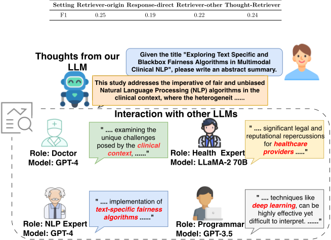
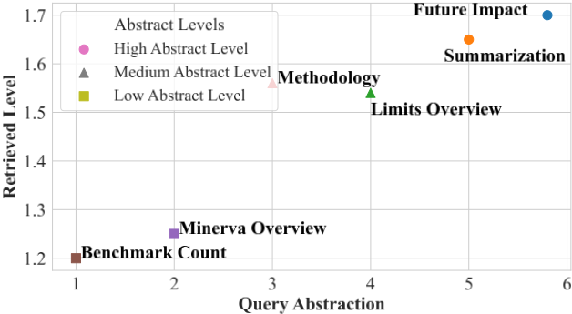
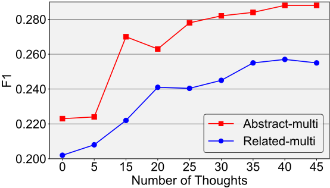
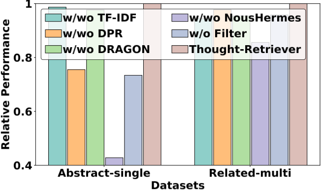
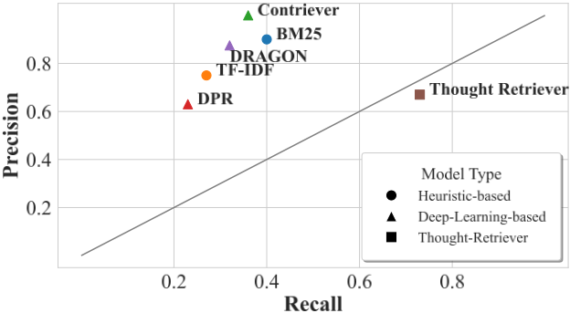
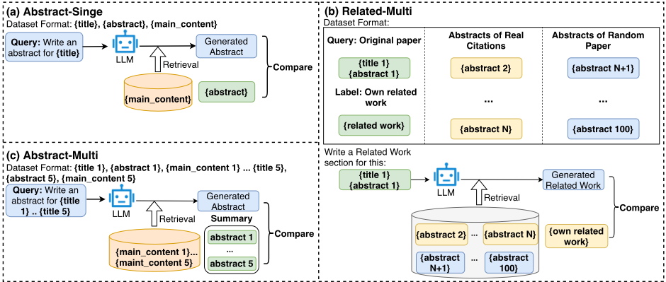
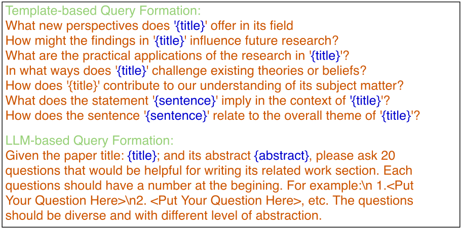

Thought-Retriever: Don't Just Retrieve Raw Data, Retrieve Thoughts for Memory-Augmented Agentic Systems
Thought-Retriever：不要只检索原始数据，而为记忆增强的 Agentic 系统检索 Thought
简介
针对 RAG 只能检索 top-K 原始数据块、受 LLM 上下文长度限制导致召回不足的问题，论文提出 Thought-Retriever：把 LLM 解答历史查询时产生的中间响应蒸馏为经过置信度校验与相似度去重的 thoughts，存入可自进化的 thought memory，新查询到来时从原始数据块与 thoughts 的混合库中统一检索。框架 training-free、model-agnostic，通过 confidence check 过滤幻觉 thought、用 embedding 相似度阈值去除冗余，并以 root source mapping 保证 thought 可溯源到原始数据块。在自建 AcademicEval 及 GovReport、WCEP 上，相比 SOTA 基线平均 F1 提升至少 7.6%、win rate 提升 16%，推理比 MemWalker 快 25 倍以上，在 AcademicEval 上甚至超过 Oracle 基线。论文还发现两条规律：thoughts 数量增长带来持续性能提升（一种新的 scaling law），且越抽象的查询越倾向检索到更深层的 thoughts。对团队而言，这是 Agent 记忆系统与 RAG 上下文组织的直接可落地参考。
问题
现有 RALM 受 LLM 上下文长度限制，只能从由数百万数据块构成的外部知识库中检索 top-K 原始数据块，导致召回不足；长上下文 LLM 计算复杂度随长度二次增长且存在 lost-in-the-middle 问题；分层 RALM（如树状摘要）在查询前静态构建、结构僵化且成本高；现有 Agent 记忆系统存储原始观察或未处理的交互日志，噪声大、难以有效检索。论文核心研究问题是：如何高效且有效地帮助 LLM 与 LLM-based Agent 利用任意丰富的外部知识作为长期记忆。
方法
提出 Thought-Retriever，一个 training-free、model-agnostic 的自进化检索框架，作为 LLM-based Agent 的通用记忆模块，包含五步流水线：(1) Thought retrieval：收到查询后按 embedding 相似度从外部知识 K 与 thought memory T 的混合库中检索；(2) Answer generation：LLM 基于检索内容生成答案；(3) Thought and confidence generation：用专门 prompt 基于查询与答案生成 thought（蒸馏为连贯知识点）及二值置信度 c_i，过滤无意义或幻觉 thought；(4) Thought merge：用 Contriever 计算新 thought 与库内条目的最大 embedding 相似度，超过阈值 ε（实验设 0.85）判为冗余；(5) Thought memory update：仅当 c_i=1 且 s_i=0 时写入记忆。Thought 形式化定义为 T_i = Abstract(Q, A, K_i)，需满足 Query-Conditioned、Abstractive、Validated 三性质，并通过递归的 root source mapping Ô(·) 将任意高层 thought 追溯到原始数据块以保障事实可溯性。同时构建 AcademicEval 基准（基于 arXiv 论文的单/多篇摘要生成与 related work 生成任务）用于评测。
关键结果
在 AcademicEval 与两个公开数据集（GovReport、WCEP）上，相比 SOTA 基线平均 F1 提升至少 7.6%，win rate 提升 16%
与 MemWalker 对比：Abstract-multi 任务上单查询推理时间 3.20 秒 vs 85.0 秒，加速超过 25 倍；Abstract-single 上 F1 0.290 vs 0.268
在 AcademicEval 上超越 Oracle（用 ground truth 挑选最优 chunk）基线：Abstract-single 上 F1 0.290 vs 0.278
人类评估：LLM 生成的 thought 置信度与人类判断一致率在 Abstract-single 上为 96%，Related-multi 上为 93%
真实部署 Arxiv Copilot 收集 500 名真实用户反馈，约 75% 用户偏好同时包含原始数据块与历史 thoughts 的回答
自进化因果验证：在 50%/50% 划分的 held-out 测试集上，预先积累 thoughts 使 Abstract-multi 的 F1 相对冷启动基线相对提升 6.4%
鲁棒性：注入无关/低质量 thoughts 时 F1 为 0.207，与仅用原始数据块的 0.208 几乎相同
效率：10 万篇论文摘要的存储低于 1.5GB，基于 FAISS 在 CPU 上运行，Arxiv Copilot 平均响应约 5 秒；Abstract-single 端到端延迟 1.85 秒（轻量检索器 <1 秒）
thought 池多样性：随机抽取 50 个 thoughts 计算两两余弦相似度，重复 10 次平均为 0.32
创新点
与标准 RALM 只检索原始 chunk 不同，Thought-Retriever 检索并复用历史交互蒸馏出的、经验证与去重的 thoughts；与分层 RALM（如 MemWalker）在查询前静态构建摘要树不同，thoughts 是查询驱动的动态副产品，几乎无额外计算开销且结构灵活；与 RECOMP、AutoCompressors 等需要训练压缩模块的上下文压缩方法不同，本方法 training-free 且兼容黑盒商业 API；与 Generative Agents、Voyager、MemGPT 等 Agent 记忆系统存储原始观察或技能描述不同，本方法存储信息密度更高、更易检索的推理抽象。此外通过 root source mapping 保证 thought 的事实可溯源，并报告了 agentic memory 的一种新 scaling law（thoughts 越多性能越好）。
团队参考意义
相关度级别：high
命中能力域：3.1 上下文工程与记忆 | 3.5 评测与可靠使用
理由：直接命中 3.1 上下文工程与记忆的核心技术：论文本质是 RAG/检索增强与 Agent 记忆系统的改进，thought memory 是典型的 Agent 长期记忆机制，涉及上下文压缩与长上下文策略，且 training-free、model-agnostic、可在 CPU+FAISS 上轻量落地，与团队'把模型用好而非训练模型'的定位完全吻合；同时命中 3.5 评测与可靠使用：自建 AcademicEval 动态评测基准、置信度过滤与去重机制保障可靠性、人类评估与 500 名真实用户的部署验证、以及系统的推理延迟与存储成本分析，均为团队评测保障与可靠使用能力域的直接参考。
建议动作：深入精读并做内部分享
中文全文
arXiv:2604.12231v1 [cs.CL] 2026年4月14日
Tao Feng ∗
Pengrui Han ∗
Guanyu Lin ∗
卡内基梅隆大学
Ge Liu
taofeng2@illinois.edu
phan3@mit.edu
guanyul@andrew.cmu.edu
geliu@illinois.edu
Jiaxuan You
jiaxuan@illinois.edu
Abstract
大型语言模型（LLM）凭借其强大的内部能力与知识，已经变革了人工智能（AI）研究。然而，现有的 LLM 在与世界交互时，仍无法有效整合海量外部知识。尽管检索增强 LLM 被提出来缓解这一问题，但它们从根本上仍受限于 LLM 的上下文长度，因为它们只能从通常由数百万个数据块组成的外部知识库中检索 top-K 个原始数据块。在本文中，我们提出了 Thought-Retriever，这是一种新颖的与模型无关的算法，可帮助 LLM 以任意长的外部数据为条件生成输出，而不受上下文长度或所检索数据块数量的限制。我们的关键洞察是让 LLM 充分利用其在解决过往用户查询时生成的中间响应（即 thoughts，思维），过滤其中无意义和冗余的思维，将它们组织到思维记忆（thought memory）中，并在处理新查询时检索相关的思维。这实际上为基于 LLM 的 Agent 配备了一种自我演化的长期记忆，使其能够通过持续交互而不断增强能力。除了算法创新之外，我们还精心构建了一个新颖的基准测试（benchmark）——AcademicEval，它要求 LLM 忠实地利用超长上下文，基于真实世界的学术论文来回答查询。在 AcademicEval 和另外两个公开数据集上进行的大量实验验证了 Thought-Retriever 显著优于最先进的基线方法，在各种任务上 F1 分数平均提升至少 7.6%，胜率平均提升 16%。更重要的是，我们进一步展示了两个令人振奋的发现：（1）Thought-Retriever 确实能够在解决更多用户查询后帮助 LLM 自我演化；（2）Thought-Retriever 学会利用更深层次的思维来回答更抽象的用户查询。
github ulab-uiuc/Thought-Retriever
1 Introduction and Related Work
大语言模型（Large Language Models, LLMs）凭借其强大的内部能力（Zhao et al., 2023; Wang et al., 2023）与知识（Peng et al., 2023a），彻底变革了人工智能（AI）研究。在构建 LLM 时，研究人员进一步期望 LLM 能够通过有效地将外部知识纳入其长期记忆来与世界交互，例如从事实（Sun et al., 2023）或与其他 AI 的交互（Wu et al., 2023; Kannan et al., 2023）中收集的知识。重要的是，LLM 的外部知识规模可以是任意大的；归根结底，我们宇宙中所有数字化的信息都可以作为这些 LLM 的外部知识。在实践中，当构建个性化 LLM 应用（Bill & Eriksson, 2023）或 LLM 驱动的领域专家（Thirunavukarasu et al., 2023; Liu et al., 2023）（例如 AI 医生）时，LLM 的相关外部知识也很容易变得极其庞大，例如达到数十亿个 token。因此，本文旨在引起人们对以下紧迫研究问题的关注：如何有效且高效地帮助 LLM 和基于 LLM 的智能体（Agent）利用（任意）丰富的外部知识作为长期记忆。
∗ 同等贡献。通讯作者。
![Figure 1: Why Thought-Retriever helps . (a) A standard RALM is limited by the number of retrieved chunks. The retrieved data fails to cover all the necessary data chunks (red chunks) for a user query. (b) A hierarchical RALM retrieves summaries S i , generated independently from user queries, which could improve recall at the cost of lower precision. (c) Thought-Retriever leverages past LLM thoughts collected from answering user queries, with little computational overhead. Thought-Retriever balances low-level facts and high-level thoughts, leading to high precision and recall.](assets/a328/figures/fig_1.png)
为了帮助大语言模型（LLM）更好地融合外部知识，现有研究主要分为两类：长上下文 LLM 和检索增强大语言模型（RALMs）。（1）长上下文 LLM，例如 MPT（MosaicML, 2023）和 LongChat（LM-SYS, 2023），旨在扩展 LLM 的上下文窗口，例如通过新颖的训练算法（Tay et al., 2022）、推理算法（Xiao et al., 2023）、新架构（Peng et al., 2023b; Gu & Dao, 2023）或系统优化（Xu et al., 2023c）。尽管这些方法提升了 LLM 的工作记忆容量，但它们无法从根本上解决 LLM 与极其丰富的外部知识进行交互的问题，因为计算复杂度通常与上下文长度呈平方关系。（2）RALMs 使用检索器从外部知识库中检索相关信息，例如 BM-25（Robertson et al., 2009）、Contriever（Izacard et al., 2022）和 DRAGON（Lin et al., 2023）。然而，这些算法仍然受限于 LLM 的上下文长度，因为它们只能从外部知识中检索能够容纳于 LLM 上下文长度上限之内的 top-K 个原始数据块。（3）分层 RALMs，例如为 LLM 创建树状结构的记忆（Chen et al., 2023）。尽管这类方法有潜力帮助 LLM 融合更抽象的知识，但人工总结封闭数据块并僵化地构建树状结构被证明是一种代价高昂且低效的方法。这种方法需要大量资源，并且缺乏针对 LLM 特定输入进行适配的灵活性。总体而言，现有方法在尝试为 LLM 引入外部知识时，在效率和有效性方面仍然存在根本性的局限。与此同时，近期基于 LLM 的智能体（Agent）系统（Park et al., 2023; Wang et al., 2024; Packer et al., 2023）也需要持久化记忆来在长时间交互中保持连贯性。然而，这些框架通常存储原始观测数据或未经处理的交互日志，这些数据噪声大且难以有效检索。这凸显了为 Agent 构建一种更加压缩且具备推理感知能力的记忆机制的必要性。
在此，我们提出 Thought-Retriever，一个与具体 LLM 无关（LLM-agnostic）的自演化检索框架，它利用历史 LLM 响应来回答新的查询。我们的关键洞察是：LLM 响应能够以极小的计算开销被转化为思维（thoughts），并且这些思维可以被组织为思维记忆（thought memory），供 LLM 用于辅助未来的任务。心理学研究（Kurzweil, 2013; Snell, 2012）支持我们的这一洞察，这些研究揭示，人类记忆是以层次化方式组织的，这不仅有助于在解决问题时检索相关信息，还通过持续处理这些交互并将其总结为复杂的认知思维，逐渐加深我们对世界的理解。值得注意的是，通过与多样化的用户查询持续交互，Thought-Retriever 会逐步生成更新颖、更广阔的思维。这是通过在解决每个查询后，将来自外部知识的新数据块组织为思维、过滤掉无意义和冗余的思维，并最终将高质量思维纳入思维记忆来实现的。因此，Thought-Retriever 使 LLM 智能体（agent）有潜力利用任意丰富的外部知识作为长期记忆，并实现能力上的自我演化。
![Figure 2: Thought-Retriever Framework . (a) Thought retrieval: Upon receiving a user query, Thought-Retriever retrieves top-K data chunks from the mixture of external knowledge and thought memory based on embedding similarity; (b) Answer and confidence generation: The LLM generates the answer for the user query based on the retrieved data chunks; (c) Thought generation: The LLM further generates thoughts and its confidence based on the user query and the generated answer; (d) Thought merge: The calculation of similarity is used to measure whether the generated thought will cause redundancy in data chunks; (e) Thought memory update: Meaningless and redundant thoughts are removed and the remaining novel thoughts are used to update the thought memory.](assets/a328/figures/fig_2.png)
除了算法上的进步，我们还精心开发了一个新颖的基准测试（benchmark）AcademicEval，它挑战 LLM 准确利用长篇上下文来回答基于真实学术论文的查询。我们在 AcademicEval 以及另外两个数据集上的全面实验证实，Thought-Retriever 显著超越最先进的基线方法，在各种任务上 F1 分数平均提升至少 7.6%，胜率平均提升 16%。此外，我们提出了两个引人入胜的发现：（1）Thought-Retriever 确实能够在解决更多用户查询后促进 LLM 的自我演化；（2）Thought-Retriever 能够利用更深层次的洞察来回答更抽象的用户查询。
总而言之，我们的主要贡献如下：（1）Thought-Retriever 框架使 LLM 智能体能够高效且有效地利用外部知识作为长期记忆，并进一步使其能够通过持续交互实现自我演化。（2）AcademicEval，一个用于测试 LLM 对超长上下文理解能力的真实世界基准测试。（3）Thought-Retriever 持续优于所有最先进的检索增强和长上下文基线方法，并带来了令人振奋的新发现。
2.1 Preliminaries
智能体的外部知识库 K = ( K 1 , K 2 , ..., K n ) 由 n 个数据块组成。我们不再仅仅将模型输出视为临时响应，而是正式地将思维（thought， T i ）定义为一种持久的、由查询驱动的认知单元，它源自查询 Q 与检索到的上下文 K i 之间的交互。形式化地，思维 T i 是一个经过验证的抽象 T i = Abstract( Q,A, K i )，其满足三个关键性质：（1）查询条件化（Query-Conditioned）：它捕捉特定查询与数据之间的逻辑关联，不同于静态摘要；（2）抽象性（Abstractive）：它从原始对话中提炼出连贯的知识点；（3）已验证（Validated）：它通过置信度检查 ( c i ) 和新颖性检查 ( s i )，以确保其有意义且非冗余。
我们将思维 T i 的直接来源定义为其生成时所使用的检索项集合 R i（其中可能同时包含原始数据块和其他思维）。为了严格地进行信息溯源，我们递归地定义根来源映射 ˆ O ( · )：
示例：考虑一个基于已有思维 T old 和原始数据块 K 3 生成的思维 T new（即 R = { T old , K 3 } ）。如果 T old 最初源自原始数据块 { K 1 , K 2 } ，那么该新思维的根来源为 ˆ O ( T new ) = ˆ O ( T old ) ∪ ˆ O ( K 3 ) = { K 1 , K 2 , K 3 } 。这确保了我们始终能够验证任何高层思维的事实依据。
2.2 Motivating Examples
Algorithm 1 Thought-Retriever Inference Algorithm
输入：用户查询 Q、外部知识 K、思维记忆 T、语言模型 L、检索器 R 以及相似度阈值 ϵ。输出：用户查询的答案 A、更新后的思维记忆 T。
1: A ← {}
2: for Qᵢ ∈ Q do
3: Tᵢ ← R(Qᵢ, K∪T) ▷ 思维检索
4: Aᵢ ← L(Qᵢ, Tᵢ) ▷ 答案生成
5: A ← A ∪ Aᵢ
6: Tᵢ, cᵢ ← L(Qᵢ, Aᵢ) ▷ 思维与置信度生成
7: sᵢ ← 1{∃ j, m ; sim(Tᵢ, Kⱼ/Tₘ) ≥ ϵ} ▷ 思维合并
8: T ← T ∪ Tᵢ, if cᵢ = 1, sᵢ = 0 ▷ 思维记忆更新
9: end for
10: return A, T
2.3 Thought-Retriever Framework
方法概述。图 2 展示了所提出的 Thought-Retriever 框架的概览，该框架作为基于大语言模型（LLM）的 Agent 的通用记忆模块，由四个主要组件构成：(1) 思维检索，其中从外部知识和思维记忆中检索数据块；(2) 答案生成，其中 LLM 基于检索到的数据块为用户查询生成答案；(3) 思维与置信度生成，其中 LLM 基于用户查询和所生成的答案进一步生成思维及其用于验证的置信度，以避免幻觉；(4) 思维合并，其中通过计算相似度来衡量所生成的思维是否会在数据块中造成冗余；(5) 思维记忆更新，其中无意义和冗余的思维会被移除；思维记忆由剩余的新颖思维进行更新，而非采纳所有新思维。我们在算法 1 中总结了 Thought-Retriever 的流程，其细节如下所示。本节的详细提示词见附录 A.2。
思维检索。在接收到用户查询 Q i 后，Thought-Retriever R 通过嵌入相似度排序从外部知识 K 和先前生成的思维记忆 T 中检索相关信息 T i。该过程可形式化为 T i ← R ( Q i , K∪T )。
答案生成。基于检索到的信息 T i，我们设计了一个提示词，将 T i 与用户查询 Q i 组合起来，并将该提示词输入到 LLM L 中以得到答案 A i。这可以表述为 A i ← L ( Q i , T i )。
思维与置信度生成。我们可以利用所获得的答案 A i 及其查询 Q i，通过 LLM L 生成思维（一个示例如表 5 所示）。然而，生成过程中的无意义思维可能会导致 LLM 产生幻觉并损害性能，因为某些查询可能与外部知识和思维记忆无关。为解决这一问题，我们设计了一个特殊的提示词，使 LLM L 能够基于用户查询 Q i 和对应的答案 A i 生成思维 T i 和思维质量置信度 c i。这可以描述为 T i , c i ← L ( Q i , A i )。至关重要的是，这一步骤将思维与标准响应（A i）区分开来：A i 旨在满足用户的即时请求，而 T i 则是被显式地生成，用于将推理逻辑提炼为一个“连贯的知识点”（如图 3 中的提示词所示），以供系统的长期记忆使用。具体而言，c i 是一个离散的二值，其中 1 表示所生成的思维 T i 是有意义的，0 则表示其无意义或属于幻觉。这一置信度生成也通过我们在第 E.1 节中的实验得到了验证。
思维合并。冗余的思维可能导致大语言模型（LLM）检索到重复的信息，这同样会损害 LLM 的性能。因此，我们计算生成的思维 Tᵢ 与数据块 (Tₘ, Kⱼ) 之间的相似度，以衡量生成的思维 Tᵢ 是否会在数据块中造成冗余。我们没有采用复杂的记号，而是将其实现为一种直接的阈值判断：我们计算
输入：给定问题：{question}，给定答案：{context}。请基于所提供的问题及其对应的答案，执行以下步骤：
步骤 1：判断该答案是一个真实的答案，还是仅仅表明由于信息不足而无法回答该问题。如果属于后者，则只输出'0'，不要附加任何多余的文字；否则输出'1'。
步骤 2：如果这是一个有效答案，请将问题与答案简洁地概括为一个连贯的知识点，形成一段通顺流畅的文字。
Tᵢ 与记忆中所有已有条目之间的最大嵌入相似度。如果该最大分数超过阈值 ϵ，我们将该思维标记为冗余（将 sᵢ 设为 1）；否则，我们认为它是新颖的（将 sᵢ 设为 0）。此处，嵌入相似度基于 Contriever（Izacard et al., 2022）计算（与 Thought-Retriever 中其他位置使用的检索器相同）。
思维记忆更新。思维质量的置信度 cᵢ 与相似度 sᵢ 决定新生成的思维是否应被更新到思维记忆 T 中。在此，我们设计为：如果 LLM 对其答案有信心，且生成的思维并非冗余，即 cᵢ = 1、sᵢ = 0，则 T 将被更新。
3 AcademicEval: New Benchmark for Long-Context LLM Understanding
当前用于评估大语言模型（LLM）长上下文记忆利用能力的基准测试（benchmark）涉及问答、长上下文摘要和分类等任务。尽管这些任务构建精良，但它们在灵活性和现实世界影响力方面存在局限，且由于需要人工标注而获取成本高昂。为解决这些问题，我们提出了一种创新的 benchmark——AcademicEval，其基于 arXiv 上每日更新的学术论文构建。AcademicEval 包含两个数据集：AcademicEval-abstract 和 AcademicEval-related。我们还上线了一个公开平台，使用户能够轻松创建类似的数据集，或利用 LLM 完成学术任务（详见附录 H）。此外，数据集的详细介绍和使用说明分别见附录 A.1 和 A.2。
(1) AcademicEval-abstract。该数据集聚焦于对单篇（表 1 中的 Abstract-single）或多篇（表 1 中的 Abstract-multi）学术论文的摘要生成任务。LLM 会拿到一篇或多篇已移除摘要和结论部分的论文，并被要求撰写摘要。对于 Abstract-single，生成的摘要直接与论文的原始摘要进行比较。对于 Abstract-multi，生成的摘要与所有给定论文摘要的汇总进行比较，该汇总由一个专家 LLM 生成并作为标签。(2) AcademicEval-related。该数据集（表 1 中的 Related-multi）引入了一项具有挑战性的任务，用于评估 LLM 理解其长上下文记忆中异构片段之间关联的能力。该任务要求根据一篇目标论文的标题和摘要撰写相关工作部分。LLM 需要将标题和摘要作为查询来检索记忆块，从而完成该任务。具体而言，记忆块描述了若干篇论文的摘要（每个记忆块对应一篇论文的摘要），其中一部分论文在目标论文的相关工作部分中被引用，另一部分则从同一更广泛领域中随机采样。随后，将生成的相关工作与目标论文的原始相关工作进行比较以完成评估。
| Dataset | Task Type | Avg. len | Cases |
|---|---|---|---|
| AcademicEval | AcademicEval | AcademicEval | AcademicEval |
| Abstract-single | Single Sum | 8,295 | 100 |
| Abstract-multi | Multi Sum | 33,637 | 30 |
| Related-multi | Multi Related | 22,107 | 30 |
| Public Datasets | Public Datasets | Public Datasets | Public Datasets |
| Gov Report | Single QA | 8,910 | 100 |
| WCEP | Multi QA | 8,176 | 30 |
| Dataset | Task Type | Avg. len | Cases |
4.1 Experiment Setup
Additional Datasets. Besides AcademicEval, we further evaluate Thought-Retriever against state-ofthe-art baselines on two public datasets. (1) GovReport (Cao & Wang, 2022): This dataset comprises 19,466 reports and associated labels prepared by government research agencies to verify if the LLM is capable of extracting salient words and useful information from a single lengthy governmental document. (2) WCEP (Ghalandari et al., 2020): This dataset contains 10,200 entries, each containing multiple news articles associated with an event sourced from the Wikipedia Current Events Portal. It requires the LLM to understand and extract useful information from a cluster of documents. Table 1 summarizes the statistics for all the datasets. Additionally, we discuss the computational details in Appendix N. It is important to note that the current experimental validation is conducted in English. However, the Thought-Retriever framework is inherently language-agnostic. We acknowledge that exploring its application to multilingual settings and low-resource languages is a promising direction, which we plan to investigate in future work to further demonstrate the framework's broad applicability.
评估指标。我们的评估方法同时涵盖传统指标和基于 AI 的评估：(1) F1（Lin, 2004）：该指标通过 ROUGE-L (F1) 计算生成文本与真实参考文本之间的语义相似度。F1 分数越接近 1，表示与参考文本的对齐程度越高，意味着生成内容的质量越好。(2) 胜率（Win Rate）：除 F1 之外，我们还引入 AI 评估器的反馈，以进行更全面的评估。在此，我们选择 Qwen1.5-72B-chat 作为我们的 AI 评估器，因为它与人类偏好具有极佳的对齐性 1。该评估过程会向 LLM 评估器呈现各种不同的回答，随后由其对这些回答的质量进行排序。该百分比表示某个回答胜过我们的思维检索器（Thought-Retriever）而被选中的频率。若该比率低于 50%，则表明我们的 Thought-Retriever 表现优于所对比的基线。
7
| Type.Dataset Method. | AcademicEval.Abstract-single.F1 | AcademicEval.Abstract-single.Win Rate | AcademicEval.Abstract-multi.F1 | AcademicEval.Abstract-multi.Win Rate | AcademicEval.Related-multi.F1 | AcademicEval.Related-multi.Win Rate | Public.Gov Report.F1 | Public.Gov Report.Win Rate | Public.WCEP.F1 | Public.WCEP.Win Rate |
|---|---|---|---|---|---|---|---|---|---|---|
| BM25 | 0.212 | 7% | 0.232 | 7% | 0.203 | 40% | 0.211 | 30% | 0.178 | 31% |
| TF-IDF | 0.202 | 4% | 0.225 | 4% | 0.207 | 40% | 0.195 | 35% | 0.223 | 34% |
| Contriever | 0.242 | 13% | 0.232 | 15% | 0.201 | 35% | 0.223 | 40% | 0.211 | 40% |
| DPR | 0.206 | 4% | 0.226 | 4% | 0.196 | 30% | 0.188 | 20% | 0.201 | 33% |
| DRAGON | 0.236 | 7% | 0.226 | 8% | 0.208 | 30% | 0.21 | 40% | 0.231 | 35% |
| Qwen3-Embed-8b | 0.245 | 28% | 0.24 | 20% | 0.211 | 35% | 0.229 | 42% | 0.235 | 44% |
| IRCoT | 0.243 | 25% | 0.235 | 18% | 0.209 | 33% | 0.225 | 41% | 0.233 | 42% |
| RECOMP | 0.237 | 7% | 0.202 | 8% | 0.198 | 10% | 0.215 | 35% | 0.205 | 33% |
| Full Context (left) | 0.118 | 2% | 0.155 | 0% | 0.193 | 13% | 0.234 | 45% | 0.207 | 35% |
| Full Context (right) | 0.118 | 1% | 0.149 | 0% | 0.188 | 8% | 0.22 | 40% | 0.21 | 41% |
| OpenOrca-8k | 0.175 | 20% | 0.135 | 3% | 0.135 | 13% | 0.244 | 41% | 0.169 | 30% |
| Nous Hermes-32k | 0.247 | 30% | 0.204 | 7% | 0.183 | 15% | 0.238 | 37% | 0.214 | 37% |
| Thought-Retriever | 0.29 | 50% | 0.275 | 50% | 0.216 | 50% | 0.232 | 50% | 0.238 | 50% |
| Type.Dataset Method. | AcademicEval.Abstract-single.F1 | AcademicEval.Abstract-single.Win Rate | AcademicEval.Abstract-multi.F1 | AcademicEval.Abstract-multi.Win Rate | AcademicEval.Related-multi.F1 | AcademicEval.Related-multi.Win Rate | Public.Gov Report.F1 | Public.Gov Report.Win Rate | Public.WCEP.F1 | Public.WCEP.Win Rate |
4.2 Retrieve Context from Factual Knowledge
本节旨在验证当外部知识来自与事实的交互时，Thought-Retriever 的性能表现。我们在表 2 中报告了我们的模型与各基线的性能。主要观察结果如下：
首先，在 AcademicEval 和公开基准测试（benchmark）上，Thought-Retriever 在两项指标上均显著优于大多数基线。例如，在所有数据集上，它的 F1 分数平均提升至少 7.6%，胜率平均提升 16%。这表明，通过与环境的交互所形成的思维能够有效增强 LLM 在不同任务中的表现。此外，对 Abstract-single 任务上由不同方法生成的摘要所进行的比较与分析（附录 F）也验证了 Thought-Retriever 的有效性。其次，我们观察到，直接使用整个文本的方法有多种形式（包括 Full Context 基线和长上下文 LLM 基线），它们在两个不同基准测试上的性能差异很大。然而，基于检索器的方法在两个基准测试上的性能则保持稳定。这有两方面原因：（1）AcademicEval 是一个更具挑战性的基准测试。它包含“多模态”信息，例如表格、不同的章节、不同的符号格式等。直接将这些复杂信息放入上下文中，会使 LLM 难以进行处理和分析。而对于基于检索器的方法，它们会从整个记忆中提取用于响应查询的最重要信息，因此能够过滤掉部分冗余信息的影响，从而取得更好的结果；（2）一些长上下文 LLM 可能曾在公开基准测试上进行过持续训练，这会导致标签泄露和模型过拟合。与此相反，AcademicEval 是一个用于评估 LLM 零样本（zero-shot）性能的良好基准测试，不存在标签泄露和过拟合的风险。由于该基准测试由 arXiv 上的论文构建而成，受益于新论文的持续发表，它是动态的且始终保持最新。我们在附录 L 中进一步展示了 Thought-Retriever 与其他最先进（SOTA）基线的比较。
1 https://qwenlm.github.io/blog/qwen1.5/
8

4.3 Retrieve Context Generated from other LLMs
形成思维可能是一个耗时的过程。当一个新的 LLM 缺乏相关记忆或外部知识时，从零开始构建高质量的思维记忆十分困难。因此，我们旨在研究 Thought-Retriever 能否帮助 LLM 快速地从已经形成专家知识的其他 LLM 中学习。为回答这一问题，我们在 Abstract-single 上设计了一个实验，LLM 的目标是根据其标题撰写摘要总结。如图 4 所示，我们的 LLM 基于与其他 LLM 的交互来构建自身记忆，这些 LLM 既包括同一 LLM 的不同角色，也包括不同的 LLM。为验证 Thought-Retriever 在该设置下的有效性，我们设计了四种不同的对比设置：(a) Retriever-origin 基于论文的原始上下文检索知识，然后利用这些知识来响应查询，该设置作为金标准设置；(b) Response-direct 将查询直接输入 LLM 以获得响应；(c) Retriever-other 让其他 LLM 基于查询提供一些相关数据，然后将这些知识用作我们 LLM 的原始记忆，最后基于检索器进行检索并获得响应；(d) Thought-Retriever 在 Retriever-other 设置的基础上，利用 Thought-Retriever 构建思维记忆，然后检索思维以响应查询。我们在 Abstract-single 的 30 个样例上使用 F1 指标进行评估，表 3 所示的结果表明，它们从优到劣的排序为：Retriever-origin、Thought-Retriever、Retriever-other、Response-direct。此外，Thought-Retriever 的响应质量与 Retriever-origin 非常接近。这些观察结果验证了 Thought-Retriever 在从其他 LLM 学习时的效果与效率。关于 Li et al. (2023) 中问答（QA）和推理（Reasoning）任务的进一步结果可参见附录 I。
9
4.4 New Findings from Thought-Retriever
(1) Thought Retriever 学会利用更深层的思维（thought）来回答更抽象的用户查询。我们开展了一项案例研究，以探究查询的抽象层级与所检索信息之间的关系。具体而言，我们创建了一组具有不同抽象层级的问题，并使用一个专家 LLM 按照其抽象层级对它们进行了排序（确切的问题可参见附录 E）。
为了量化所检索信息的深度，我们引入了一种形式化的抽象层级（Abstraction Level）度量，记为 L(x)。其计算遵循如下递归定义：
该递归公式确保仅由原始数据推导出的思维层级为 2（即 1 + 1），而由其他高层级思维综合而成的思维将获得严格更高的抽象得分（例如 > 2），这反映出更深层的认知加工。
如图 5 所示，其中 y 轴表示问题的抽象层级，x 轴表示我们的方法所检索到的全部信息的平均抽象层级。可以观察到，越抽象的问题倾向于检索到抽象层级越高的信息。
(2) Thought-Retriever 在解决更多用户查询后帮助 LLM 实现自我进化——一种新型缩放定律（scaling law）。为了研究 Thought-Retriever 的性能与思维数量之间的关系，我们在 AcademicEval 的 Abstract-multi 和 Related-multi 上设计了一项使用不同数量思维的实验。如图 6 所示，F1 分数随思维数量的增长呈现出明显的上升趋势，这表明性能得到了提升。因此，与用户进行更多次交互使 Thought-Retriever 能够协助 LLM Agent 自我进化并形成更深入的理解，从而展示了一种适用于智能体记忆（agentic memory）的新型缩放定律（Kaplan et al., 2020）。我们还在附录 K 和 M 中验证了思维的多样性以及思维过滤机制的有效性。
4.5 Ablation Study
我们进行了一系列实验，以研究不同检索器的影响。(1) w/wo TFIDF/DPR/DRAGON：在这些变体中，我们将本方法中的检索器（Contriever）替换为其他具有代表性的检索器，以评估它们相对于我们当前检索器的有效性。(2) w/wo NousHermes：在此变体中，我们使用 NousHermes 来构建思维。(3) w/o Filter：我们移除了框架中的置信度生成和思维合并，以评估过滤无意义和冗余思维的重要性。我们在图 7 中报告了在 Abstract-single 和 Abstract-multi 数据集上的评估结果。这些对比清楚地表明，我们的方法始终优于所有变体，这说明 Contriever 最适合 Thought-Retriever，并且过滤无意义和冗余的思维能够为性能带来显著提升。
4.6 Qualitative Analysis based on Precision and Recall
在 2.2 节的动机示例中，我们重点指出了传统方法在召回率（recall）和精确率（precision）方面表现不佳之处。在本节中，我们使用 Related-multi 数据集，展示 Thought-Retriever 在平衡这两项指标方面优于其他基线方法。在实验中，真实引用文献的摘要被视为真值（ground truth）。我们旨在评估，在每次仅能检索 8 个信息块（chunks）的限制下，不同检索器检索信息以覆盖真值的能力。我们将结果绘制在图 8 中，其中横轴为召回率值，纵轴表示精确率。可以观察到，所有传统检索方法都表现出明显偏低的召回率值。这主要归因于 top-K 检索限制，因为 K=8 远小于真值引用文献的数量。相比之下，ThoughtRetriever 在召回率值上表现出显著提升。这是因为它利用了由多篇论文构建而成的思维，从而使 Thought-Retriever 能够实现更高的召回率。更重要的是，与其他检索器相比，Thought-Retriever 还表现出中等偏高的精确率。这表明，尽管存在轻微的权衡，Thought-Retriever 并未显著损害其检索最相关信息的能力。
10


11


5 Additional Related Works
LLM Agent 记忆与经验。自主 Agent 依赖持久化记忆机制在长时间交互中保持连贯性，有效地模拟了持续学习中的经验回放概念。诸如 Generative Agents（Park et al., 2023）和 Voyager（Wang et al., 2024）等知名框架利用记忆流或技能库来存储过去的观察与行为，使 Agent 能够基于历史经验不断演化。类似地，MemGPT（Packer et al., 2023）以操作系统管理分层内存的方式来管理上下文。尽管长上下文 LLM 试图通过将全部历史纳入庞大的上下文窗口来解决这一问题，但其受制于二次方计算复杂度和 lost-in-the-middle（中间信息丢失）现象，往往无法有效利用远距离信息。我们的方法衔接了这些范式，但具有一个显著优势：Thought-Retriever 既不存储原始观察（如标准 Agent 那样），也不处理详尽无遗的原始上下文（如长上下文模型那样），而是存储提炼后的想法（thoughts）——即中间推理结果。这使得模型能够高效地检索并复用来自过去经验的高级认知模式，避免了处理超长原始上下文所固有的噪声与延迟瓶颈。总而言之，与存储原始观察或技能描述的现有 Agent 记忆系统不同，Thought-Retriever 存储的是经过验证和去重的推理抽象，为 Agentic 系统提供了一种信息密度更高、更便于检索的记忆表示。
12
长上下文 LLM。为应对 LLM 中长上下文处理的挑战，最直观的策略是扩展 LLM 的上下文窗口。这些方法包括训练更大、更先进的模型（MosaicML, 2023; LM-SYS, 2023）、微调现有语言模型以处理更宽的窗口（Tay et al., 2022）、应用位置编码来扩展上下文窗口大小（Xiao et al., 2023），以及通过用户嵌入来压缩上下文（Ning et al., 2024）。然而，由于模型训练相关的高昂成本以及缺乏灵活性，这些方法往往存在不足。此外，仅仅扩展上下文并不能保证忠实的生成，因为大模型仍然受到对象幻觉等问题的困扰，需要特定的干预措施（Li et al., 2025; 2024b），因而未能充分解决长上下文的根本可靠性问题。
检索增强语言模型（RALM）。RALM 通过从上下文块中检索相关信息——这些信息可能由大语言模型（LLM）自身进行评估 (Rahmani et al., 2024)——为长上下文 LLM 提供了一种灵活且经济高效的替代方案。当前方法采用的技术包括词元嵌入（token embeddings）(Izacard et al., 2022; Lin et al., 2023)、关键词搜索 (Robertson et al., 2009)、微调的重排序器（reranker）(Ram et al., 2023) 以及参数化的检索验证损失 (Fu et al., 2023)。以 IRCoT (Trivedi et al., 2023b) 为代表的近期范式，以及诸如 RankCoT (Wu et al., 2025) 和 Rationale-Guided RAG (Sohn et al., 2025) 等新兴方法，试图通过交错或排序逐步推理路径来增强检索。然而，这些方法通常依赖于即时生成推理，这会带来难以承受的延迟和计算开销。尽管已有诸如层次树结构 (Chen et al., 2023) 等用于管理上下文的进展，现有解决方案仍然僵化或成本高昂。我们提出了基于 RALM 的 Thought-Retriever 框架，该框架能够高效地将上下文压缩为所存储的思维，从而应对这些效率挑战。为了针对不断演进的 LLM 能力格局 (Pang et al., 2025) 和评估标准 (Li et al., 2024a; Kang et al., 2024) 严格验证我们的方法，我们还引入了一个全面的基准测试（benchmark）。
面向 LLM 的上下文压缩。为了缓解上下文窗口的限制，上下文压缩技术旨在将长输入压缩为紧凑的表示。早期方法侧重于词元级剪枝 (Jiang et al., 2023)。近来，生成式压缩方法日益受到关注。例如，RECOMP (Xu et al., 2023b) 和 AutoCompressors (Chevalier et al., 2023) 提出通过学习来合成压缩式摘要或稠密向量以表示长文档。然而，这些方法的一个显著缺点是必须训练额外的压缩模块或微调骨干 LLM，这会带来巨大的计算开销。此外，依赖软提示（soft prompts）或内部嵌入的方法 (Mu et al., 2023) 通常与模型权重不可访问的黑盒 API 不兼容。相比之下，我们的 Thought-Retriever 是一个轻量级、免训练的框架。它完全与模型无关，能够与本地部署的开源模型以及闭源商业 API 无缝集成，从而在保留高层推理路径的同时，提供更优的效率和更广泛的现实世界适用性。
6 Conclusion
我们提出 Thought-Retriever，通过动态生成并检索中间思维（thoughts）来增强大语言模型（LLM），使其能够高效利用超出上下文限制的外部知识。为了进行评估，我们进一步提出了 AcademicEval，一个面向摘要生成与相关工作生成等学术任务的基准测试（benchmark）。Thought-Retriever 的表现优于现有方法，能够通过交互不断演进，并展现出在现实世界应用中的巨大潜力。作为一个轻量级、与模型无关的记忆模块，Thought-Retriever 可以便捷地集成到基于 LLM 的智能体系统中，充当其持久的、自我演进的长期记忆。
7 Limitations
尽管我们的工作取得了令人鼓舞的成果和贡献，我们仍想讨论一些局限性。我们的实验和 AcademicEval 数据集主要使用人工智能（AI）相关领域的论文，这可能会限制我们研究结论的泛化能力。未来的工作应考虑将研究范围扩展到更广泛的学科领域。
13
此外，我们的实验和评估均以英文进行。这种对英文的聚焦可能会忽略与其他语言相关的细微差别和挑战。将我们的方法扩展到涵盖多语言数据集和评估，可以对其有效性提供更全面的评估。
虽然 AcademicEval 提供了来自 arXiv 的动态且持续更新的数据集，但它依赖于上传至该平台的论文的可用性和质量。我们假设并希望研究人员将继续产出新颖且高质量的工作。
最后，尽管我们的框架在实验中展现了有效性，但其在真实世界超大规模应用中的鲁棒性、可扩展性和适应性尚未得到充分检验。我们正在积极开发相关演示（demo），并希望在不远的将来在这一方面带来更多令人振奋的更新。
A Details of AcademicEval
在本节中，我们在 A.1 节提供所提出的 AcademicEval 基准测试（benchmark）中各数据集的数据格式文档，并在 A.2 节提供其使用方法的详细说明与提示词（prompts）。
A.1 Dataset Documentation
对于 AcademicEval-abstract，在单文档设置（Abstract-single）中，每个案例包含论文标题、作为标签的摘要，以及除摘要和结论之外的主要内容。对于多文档设置（Abstract-multi），每个案例包含五篇论文的标题、摘要，以及除摘要和结论之外的主要内容。我们利用一个专家级大语言模型（LLM），使用图 11 中的提示词，将一个案例中的五个摘要总结为一段流畅的总结作为其标签。对于 AcademicEval-related（Related-multi），每篇论文包含一个标题、其摘要、作为标签的相关工作（related work）、其真实引用文献的摘要，以及其他随机论文的摘要。
| Attribute | Description | |
|---|---|---|
| Abstract-Single | 'title' 'abstract' as label 'main_content' | The title of the academic paper. The abstract of the academic paper. The content of the paper excluding the abstract and the con- clusion. |
| Abstract-Multi | 'title 1' 'abstract 1' 'main_content 1' ... | The title of the first academic paper. The abstract of the first academic paper. The content of the first paper excluding the abstract and the conclusion. ... |
| Abstract-Multi | 'title 5' 'abstract 5' 'main_content 5' 'label' | The title of the fifth academic paper. The abstract of the fifth academic paper. The content of the fifth paper excluding the abstract and the conclusion. The summary of five abstracts as a fluent passage. |
| Related-Multi | 'title' 'own abstract' 'own related work as label' 'citations' abstracts' 'other random ab- stracts' | The title of the academic paper. The abstract of the academic paper for wiring-related work. The related work of the academic paper for wiring-related work. The abstracts of the target paper's real citations. The abstracts of other random papers. |
| | Attribute | Description |
A.2 Usage Instruction and Prompt Utilization.
在此，我们提供在 AcademicEval 基准测试（benchmark）中使用数据集的详细说明。我们还提供了实验中所使用的全部必要提示词。
Abstract-Single。对于单篇论文摘要总结任务，如图 9 (a) 所示，我们首先提供用于检索目的的提示词："Please craft an abstract summarizing the key points from the provided text. The abstract should be of appropriate length and include the main theme, significant findings or arguments, and conclusions of the text. Ensure it captures the essence of the content in a clear, succinct manner"。随后，我们使用检索器基于该提示词从论文的主要内容中检索信息。接着，大语言模型（LLM）使用图 10 中的提示词基于检索到的信息生成摘要。最后，我们将 LLM 生成的摘要与原始摘要进行比较以完成评估。
18

Abstract-Multi。对于多篇论文摘要总结任务，如图 9 (b) 所示，我们首先提供用于检索目的的提示词："Please craft an abstract summarizing the key points from the provided text. The abstract should be of appropriate length and include the main theme, significant findings or arguments, and conclusions of the text. Ensure it captures the essence of the content in a clear, succinct manner"。然后，我们基于该提示词从这 5 篇论文的主要内容中检索信息。进一步地，LLM 使用图 10 中的提示词基于检索到的信息生成摘要。生成的摘要与真实值（ground truth）进行比较，该真实值是使用图 11 中的提示词对五个摘要进行总结而得到的。
Related-Multi。在相关工作任务中，如图 9 (c) 所示，我们向 LLM 提供提示词："Could you please write a related work for introducing this paper? Its abstract is: {paper_abs}"，其中 "{paper_abs}" 会被替换为该论文的真实摘要。在该提示词的引导下，LLM 从一个论文摘要集合中检索信息，该集合包含其相关工作部分中真实引用文献的摘要以及随机选取的论文。随后，LLM 使用图 12 中的提示词基于检索到的信息生成相关工作部分。最后，将生成的相关工作与论文真实的相关工作部分进行比较以完成评估。
优势与贡献。与现有的基准测试（benchmark）数据集相比，AcademicEval 具有多项优势。首先，我们维护了一个源自 arXiv 的持续更新的数据集，该数据集受益于新论文的不断发表。这种动态特性缓解了静态基准测试中的过拟合与标签泄露问题，并使得对 LLM 自适应能力的评估成为可能。其次，与需要投入人力的人工构建数据集不同，高质量标签可以在无需额外成本的情况下生成。第三，我们的数据集不仅对评估 LLM 具有价值，还可作为现实世界中的实用学术工具，帮助研究人员更好地理解其所在领域并提升生产力。我们开发了一套高度自动化的数据集构建代码库，该代码库即将发布。
19
请撰写一段摘要，总结所提供文本中的关键要点并将其串联起来。
该文本应由从不同论文中提取的内容组成，这些论文可能跨越不同学科，但都涉及相互重叠的主题或研究对象。"
摘要的篇幅应适中（约 300 词），需涵盖该文本的主要主题、重要发现或论点以及结论。
请确保摘要以清晰、简洁的方式捕捉内容的精髓，提供一个连贯的总结，将各篇论文衔接起来。" 以下是文本：{context}
请创建一个简洁而连贯的总结，概括以下五个不同摘要的要点与主题。该总结应整合每个摘要的主要思想，以提供一份全面的概述。其篇幅应约为 300 词。摘要 1：{abs1} 摘要 2：{abs2} 摘要 3：{abs3} 摘要 4：{abs4} 摘要 5：{abs5}
B Baseline Details
首先，我们考虑 2 种基于启发式的检索器：(1) BM25 (Robertson et al., 2009)：信息检索中广泛使用的一种排序函数。(2) TF-IDF (Ramos et al., 2003)：一种评估词在记忆中重要性的统计度量。
给定一篇研究文章的摘要和相关工作，以及一份示例材料，撰写一段关于其相关工作的文字。请以下列内容作为指导：
摘要：本研究论文探究了气候变化对全球农业生产率的影响。该研究采用了一个涵盖过去一个世纪温度与降水变化的综合数据集，并结合历史作物产量数据。通过先进的统计建模和机器学习技术，该研究识别出温度和降水波动与作物产量变化之间的显著相关性。此外，该研究还预测了不同气候变化情景下农业生产率的未来情景，为农业领域的政策制定者和利益相关方制定适应性策略提供了宝贵的见解。
相关工作：该领域的既往研究已探讨了气候变化与农业之间的关系，但主要聚焦于特定区域或特定作物。Smith et al. (2017) 就温度对北美小麦产量的影响进行了全面分析，强调了小麦作物对气温升高的脆弱性。此外，Johnson et al. (2019) 研究了降水模式变化对东南亚水稻生产的影响，强调了水资源管理在减轻农业气候相关风险方面的重要性。尽管这些研究贡献了宝贵的见解，我们的研究通过纳入全球视角并运用先进的建模技术扩展了其范围，从而能够对气候变化情景下的未来农业生产率做出更准确的预测。
基于本文的摘要与相关材料，撰写一段关于其相关工作的文字：
图 12：用于撰写相关工作的提示。该提示在我们的实验中用于要求大语言模型（LLM）基于原论文的摘要以及检索到的相关材料来撰写相关工作部分。我们还提供了一个上下文学习（in-context learning）的示例，以使 LLM 能够在这项具有挑战性的任务上更有效地执行。
其次，我们选择了 4 种基于深度学习的检索器：(3) Contriever (Izacard et al., 2022)：利用上下文化嵌入和神经网络来理解并检索相关的记忆块。(4) DPR (Karpukhin et al., 2020)：通过将记忆块和查询编码为稠密向量来检索记忆块。(5) DRAGON (Lin et al., 2023)：采用对比学习来训练其检索记忆块的能力。(6) Qwen3-Embed-8b (Zhang et al., 2025)：一种最先进的仅解码器（decoder-only）嵌入模型 给定原始摘要：{original}，并给定两个生成的摘要：
21

Generated Abstract 1:{gen1}; and Generated Abstract 2: {gen2}, plase evaluate which one is closer to the original abstract.
Just output 'Abstract 1 is better' or 'Abstract 2 is better', no extra words.
that leverages large-scale pre-training to achieve superior semantic understanding and retrieval performance across diverse tasks.
Third, we include 2 advanced retrieval and compression strategies: (7) IRCoT (Trivedi et al., 2023a): An iterative framework that interleaves retrieval with Chain-of-Thought reasoning, allowing the model to dynamically retrieve information based on partial reasoning steps for complex queries. (8) RECOMP (Xu et al., 2023a): A retrieval augmentation method that compresses retrieved documents into concise summaries or selects key segments to maximize information density within the context window.
Fourth, we consider full context window baselines with document truncation: (9) Full Context (left) (Chen et al., 2023): This approach uses the initial segment of a document, truncated to fit within a 4,096-token window. Focusing on the first 4,096 tokens, it prioritizes early content in the document. (10) Full Context (right) (Chen et al., 2023): In contrast to Full Context (left), it utilizes the final segment of a document, also truncated to a 4,096-token window.
22
Lastly, we selected two long-context LLMs: (11) OpenOrca-8k (Mukherjee et al., 2023): is fine-tuned on the Mistral 7B model using the OpenOrca dataset. At its release time, it was ranked the best model among all models smaller than 30B on Hugging Face, with a maximum context length of 8,192 tokens. (12) Nous Hermes-32k (Shen et al., 2023): trained on Mixtral8x7B MoE LLM. It boasts a maximum context length of 32,768 tokens.
Note that we do not compare with MEMWALKER (Chen et al., 2023), since it is costly to run and cannot scale to tasks with many data chunks. We use Contriever as Thought-Retriever's retriever.
C Retrieve Context Generated from other LLMs
我们利用图 4 所示的示例来说明我们的 LLM 与另外四个专门化 LLM 交互的过程，其中每个 LLM 都是不同领域的专家。这些专家 LLM 承担指定的角色（例如医生），并拥有独特的背景知识。因此，我们的 LLM 能够快速吸收其洞见，并整合这些外部知识。
D User Query Formation
为了对真实场景中的用户查询进行建模以引导思维生成，我们主要采用两种方法：1）基于模板的查询构建，以及 2）基于 LLM 的查询构建。相关提示词如图 13 所示。
基于模板的查询构建。我们为所有论文构建了通用且广泛适用的模板。例如，“'title' 这项研究的实际应用是什么？”以及“'title' 为其所在领域提供了哪些新视角？”。在实验过程中，我们将 'title' 替换为实际的论文标题，从而形成具体的查询。
基于 LLM 的查询构建。我们用于生成更具体查询的另一种方法是利用 LLM。具体而言，我们使用了 Mistral 8x7B 和专家 LLM 等模型。通过向这些模型提供论文标题和摘要，我们要求它们生成不同抽象层次的多样化问题。这些问题针对每篇具体论文量身定制，从而能够实现更细致、更有针对性的查询。
E Specific Queries of Abstract Level
本节列出了我们在第 4.4 节案例研究中使用的具体查询，展示了 ThoughtRetriever 如何利用更深层的思维来应对更抽象的用户查询。每个查询均按其总体抽象层次进行分类，并依据专家 LLM 所评估的抽象程度进行排序，其确切内容详见表 6。
E.1 Algorithm Adaptability and Filter Effectiveness
Thought-Retriever 可适配于各种 LLM 骨干模型。虽然我们使用了精心设计的提示模板，但 Thought-Retriever 并非针对任何特定模型进行定制。该算法在各种 LLM 骨干模型上均具有适应性和有效性，这一点体现在 Qwen-7B Bai et al. (2023) 和 Llama-3-70B Dubey et al. (2024) 在多项任务中（表 7）始终名列前茅的稳定表现上。
F Example Outputs Comparison of Different Methods
我们在 AcademicEval-abstract-single 数据集上展示了使用不同方法生成的输出示例。具体而言，在图 15 中，我们给出了原始论文的标题和摘要，以及由我们的 Thought-Retriever 生成的摘要，并附有专家 LLM 的评语。在图 16 中，我们展示了使用 DPR 和 TF-IDF 生成的摘要，同样附有专家 LLM 的评语以供比较。在图 17 中，我们展示了由长上下文模型 Nous Hermes 32k 生成的示例摘要以及专家 LLM 的相应评语。显而易见，我们的 Thought-Retriever 生成的摘要更加全面且连贯，对具体性与抽象层次的把握也更为得当。下面，我们附上专家 LLM 的一段完整评语：
23
| 0 | 1 |
|---|---|
| Query | What has driven significant progress in various NLP tasks in recent years? |
| Response | According to the text, significant progress in various NLP tasks in recent years has been driven in part by benchmarks such as GLUE, whose leaderboards rank models by how well they perform on these diverse tasks. |
| Prompt tem- plate | Input: Given query:{query}, given response:{response}. Based on the provided query and its corresponding response, perform the following step: succinctly summarize both the question and answer into a coherent knowledge point, forming a fluent passage. |
| Thought candidate | Here is a summarized knowledge point: In recent years, significant progress has been made in various Natural Language Processing (NLP) tasks. A key driver of this progress is the development of benchmarks, such as GLUE, which provide a stan- dardized way to evaluate and compare the performance of different models on a range of diverse NLP tasks. These benchmarks, which often take the form of leaderboards, rank models based on their performance, fostering competition and innovation in the field. As a result, researchers and developers have been motivated to improve their models, leading to significant advancements in NLP capabilities. |
| 0 | 1 |
| Abstraction | Rank (expert LLM) | Query |
|---|---|---|
| High | 6 (Most Ab- stract) | "What are the broader future implications of user-centric utility in NLP model evaluation?" |
| High | 5 | 'Please craft an abstract summarizing the key points from the provided text.' |
| Medium | 4 | "What are some of the limitations of this study?" |
| Medium | 3 | 'What are the key methods introduced in this paper?' |
| Low | 2 | "Please explain the term Minerva to me." |
| Low | 1 (Least Ab- stract) | "How many benchmarks are used to test the model's long context understanding ability in this paper?" |
| Abstraction | Rank (expert LLM) | Query |
"Thought-Retriever 生成的摘要最佳，且与原始摘要最为一致。它有效地抓住了所有关键要点，包括对排行榜指标的批评，以及需要考虑准确率之外的因素（如能效、模型规模和推理延迟）的必要性。它还呼吁提高排行榜的透明度，强调一种整体性的 NLP 评估方法，纳入实用的统计数据，以提供对模型实用性的全面衡量。该摘要清晰、条理分明，并包含对排行榜报告方式变革的行动呼吁，以更好地满足 NLP 从业者的实际需求。"
24
| Type.LLM.Method | Abstract-single.Qwen-7b.F1 | Abstract-single.Qwen-7b.Win Rate | Abstract-single.Llama-3-70b.F1 | Abstract-single.Llama-3-70b.Win Rate | Abstract-multi.Qwen-7b.F1 | Abstract-multi.Qwen-7b.Win Rate | Abstract-multi.Llama-3-70b.F1 | Abstract-multi.Llama-3-70b.Win Rate |
|---|---|---|---|---|---|---|---|---|
| BM25 | 0.196 | 3% | 0.22 | 13% | 0.232 | 7% | 0.233 | 14% |
| TF-IDF | 0.192 | 3% | 0.21 | 17% | 0.22 | 3% | 0.224 | 12% |
| Contriever | 0.231 | 10% | 0.238 | 18% | 0.229 | 4% | 0.228 | 19% |
| DPR | 0.209 | 4% | 0.215 | 18% | 0.222 | 3% | 0.222 | 11% |
| DRAGON | 0.209 | 3% | 0.225 | 13% | 0.224 | 4% | 0.236 | 19% |
| Full Context (left) | 0.069 | 0% | 0.102 | 0% | 0.061 | 0% | 0.107 | 0% |
| Full Context (right) | 0.073 | 0% | 0.104 | 0% | 0.065 | 0% | 0.103 | 0% |
| OpenOrca-8k | 0.175 | 17% | 0.175 | 23% | 0.135 | 17% | 0.135 | 10% |
| Nous Hermes-32k | 0.247 | 20% | 0.247 | 37% | 0.204 | 13% | 0.204 | 7% |
| Thought-Retriever | 0.259 | 50% | 0.285 | 50% | 0.253 | 50% | 0.266 | 50% |
| Type.LLM.Method | Abstract-single.Qwen-7b.F1 | Abstract-single.Qwen-7b.Win Rate | Abstract-single.Llama-3-70b.F1 | Abstract-single.Llama-3-70b.Win Rate | Abstract-multi.Qwen-7b.F1 | Abstract-multi.Qwen-7b.Win Rate | Abstract-multi.Llama-3-70b.F1 | Abstract-multi.Llama-3-70b.Win Rate |
"相比之下，DPR 和长上下文模型生成的摘要虽然涉及类似的要点，但不够全面，更多聚焦于诸如针对特定用户的排行榜、显示性偏好理论等具体建议，而未能充分涵盖关于排行榜指标与从业者需求之间分歧这一更宏观的论点。TF-IDF 摘要偏离最大，讨论了脆弱性、偏差和分布外数据等相关主题，但并未专门聚焦于排行榜指标与实用性之争这一核心论点，因而与原始摘要的意图契合度较低。"
G Discussion
变革性影响与实际应用。Thought-Retriever 代表了人工智能（AI）系统的一次范式转变，将其从静态的知识存储库转变为能够交互与学习的动态智能框架。其独特的架构不仅能够处理和检索信息，还会随着每一次用户交互而不断演进，实际上是在随时间推移不断“思考”并适应变化。这样的智能系统对于实时学习和上下文感知响应至关重要的场景而言不可或缺。例如，通过引入我们的方法，现有的 AI 服务系统可以得到显著增强。通过将原始指南和法规存储为外部知识库的一部分，并将每次人类查询及其结果记录为思维，这些系统可以演进为能够持续改进和学习的更智能实体。这种自适应能力使 Thought-Retriever 成为动态且不断变化的工业环境中极具价值的工具，在这类环境中，基于历史数据和不断演进的信息进行快速决策至关重要。在客户服务、医疗保健和法律咨询等以个性化且信息充分的响应为关键的领域，Thought-Retriever 能够提供更准确、更具上下文感知能力且更高效的解决方案。其从用户交互中持续学习和适应的能力，使其成为变革各行业与 AI 技术交互及利用方式的开创性工具。
未来研究。受人类思维启发，我们的 Thought-Retriever 迈出了通往通用 AI Agent 的坚实一步。在此基础上，未来研究可以应对若干关键挑战。首先，处理日益复杂数据集时的可扩展性与效率将至关重要。这不仅涉及提升计算能力，还包括改进算法以实现更高的精度和速度。其次，理解并模拟类人推理仍然是一个关键目标。这包括把握语言、情感和文化背景中的细微差别，并拓展 AI 所能理解和回应的边界。此外，确保 AI 决策中的伦理考量也十分重要。随着检索器的演进，其对隐私、安全和社会规范的影响必须得到严格评估与引导。最后，探索新的应用领域，例如个性化教育、心理健康分析和先进机器人技术。
H Arxiv Copilot Demo
基于 Thought-Retriever，我们进一步提出了一个名为 Arxiv Copilot 的演示，并将其部署在 Huggingface 上，如图 18 所示，旨在提供个性化的学术服务。更具体而言，它由以下三个主要部分组成。首先，在第一个"Profile"（个人档案）部分，用户可以输入研究人员的姓名并生成研究档案。其次，在研究趋势部分，用户可以选择一个时间范围并获取相关的主题趋势和想法。最后，在"Chat and Feedback"（对话与反馈）部分，用户可以与 Arxiv Copilot 对话，并从两个答案中选择更好的回复。在此，我们对任何进一步的反馈表示感谢。
Profile 在本部分中，如图 18 (a) 所示，用户可以按照标准格式输入其姓名，从而在此处获取来自 arXiv 的个人档案。
Research Trend 如图 18 (b) 所示，如果用户已设置其个人档案，Arxiv Copilot 将为用户提供个性化的研究趋势和想法；否则，将提供一般性的研究趋势。
Chat and Feedback 如图 18 (c) 所示，Arxiv Copilot 每次会给出两个答案。如果用户更喜欢第二个答案，他/她可以点击第二个答案下方的"like"（赞），第一个答案将被移除。如果用户点击"dislike"（踩），第二个答案将被移除。
I Further Results on QA and Reasoning Task
我们在近期的 LooGLE 数据集 Li et al. (2023) 上，针对问答（QA）与推理任务对 Thought-Retriever 进行了评估。如表 8 所示，其表现始终优于所有基线方法，在 QA 与推理准确率两方面均展现出强劲的性能。
| QA Accuracy | Reasoning Accuracy | |
|---|---|---|
| BM25 | 10% | 30% |
| TF-IDF | 13% | 33% |
| Contriever | 20% | 50% |
| DPR | 17% | 20% |
| Dragon | 13% | 27% |
| Full Context (left) | 7% | 20% |
| Full Context (right) | 7% | 13% |
| OpenOrca - 8K | 0% | 10% |
| Nous Hermes-32K | 3% | 17% |
| Thought Retriever | 27% | 57% |
| | QA Accuracy | Reasoning Accuracy |
J API Acknowledgement
我们使用 Together AI 的 API 开展了实验。运行我们的代码没有任何特殊要求。本质上，任何拥有标准笔记本电脑或台式电脑以及任意兼容 API（不一定是 Together AI 的 API）的人都可以复现我们的实验设置。
26
| Method | F1 |
|---|---|
| Contriever | 0.242 |
| Thought-Retriever using Contriever | 0.29 |
| NV-Embed | 0.268 |
| Thought-Retriever using NV-Embed | 0.326 |
| Method | F1 |
| Dataset | Model | F1 | Win Rate |
|---|---|---|---|
| Abstract-single | RECOMP | 0.237 | 7% |
| Abstract-single | Thought-Retriever | 0.29 | 50% |
| Abstract-multi | RECOMP | 0.202 | 8% |
| Abstract-multi | Thought-Retriever | 0.275 | 50% |
| Dataset | Model | F1 | Win Rate |
K Diversity of user queries and thoughts in real-world applications
我们从以下三个方面讨论真实应用中用户查询与思维（thought）的多样性。
面向多样性的冗余过滤。如第 2.3 节所述，在我们的框架中，当生成一个新的思维时，我们会显式地检查其与池中已有思维之间的余弦相似度。如果它与任何已有思维过于相似，则该思维会被丢弃。这确保了独特且非冗余的思维得以保留，从而维持了思维池的多样性。
多样性的实证分析。为了量化多样性，我们进一步开展了一项分析：从 AcademicEval 任务中的思维池里随机抽取 50 个思维，并计算它们两两之间的余弦相似度。该过程重复了 10 次。平均两两相似度为 0.32，表明这些思维之间具有很高的语义多样性。
初步的真实世界使用数据。如附录 H 所介绍，我们基于 Thought-Retriever 构建了一个 Arxiv Copilot 系统，该系统能够与真实用户进行交互。从我们部署的系统所收集的实际使用数据中，我们观察到用户查询类型和思维交互的丰富多样性。这一真实世界的证据进一步支持了如下论断：我们的系统能够在实际场景中鼓励并处理多样化且有意义的记忆检索。
L Comparison between Thought-Retriever and other SOTA baselines
使用最新检索器模型的消融实验。我们在 Abstract Single 任务上使用 MTEB 上最新的检索器模型——NV Embed（Lee et al., 2024）进行了实验，结果如表 9 所示。这些结果进一步支持了我们的框架与检索器相辅相成这一观点。附带一提，MTEB 上的许多最新检索器模型，包括 NV-Embed（7.85B 参数），都比 Contriever（110M 参数）大得多，并且需要显著更多的计算资源。在我们的初步实验中，我们优先选择了在性能与计算效率之间取得平衡的模型，以确保我们的框架具有更广泛的可用性和实际可实施性。
与最新长上下文理解模型的比较。我们引入了一种名为 RECOMP（Xu et al., 2023b）的先进检索算法进行比较。RECOMP 是一个强大的基线，它通过将抽取式压缩器（从文档中选取关键句子）与生成式压缩器（通过综合多个文档的信息来创建摘要）相结合来解决长上下文问题。我们在 Abstract-single 和 Abstract-multi 任务上将 Thought-Retriever 与 RECOMP 进行了比较。表 10 中呈现的结果进一步验证了我们的方法在理解长上下文方面的有效性。
27
M Details of our thought filtering mechanisms
我们将从以下三个方面讨论我们的思维过滤机制。
思维质量过滤（Thought Quality Filtering）。在基于给定查询和检索到的信息生成答案时，我们明确指示 LLM 评估检索到的内容是否足以回答该问题。如果不足以回答，则提示其返回“No”，而不是产生推测性的答案。此外，在基于问题和答案生成思维时，我们使用一个专门的提示（prompt），其中包含一项二元置信度检查——要求模型说明所生成的思维是否合乎逻辑且无幻觉。如果思维没有意义，则将其丢弃。该过程在 2.3 节中有详细说明，完整提示包含在图 3 中。
思维冗余过滤（Thought Redundancy Filtering）。如 2.3 节所示，在将一条新思维加入思维池之前，我们会计算其与现有思维之间的余弦相似度。如果它与任何现有条目过于相似，则会被过滤掉。这确保了存储的是独特且非冗余的思维，从而促进多样性并减少重复。
对低质量思维的鲁棒性——补充实证研究（Robustness to Low-Quality Thoughts - Added Empirical Study）。我们进一步补充了一项实验，该实验表明，即使存在一些低质量或具有干扰性的思维，我们的 Thought-Retriever 依然保持鲁棒。具体而言，我们使用 Related-multi 数据集设计了一个实验，其中检索的真值（ground truth）是已知的（即真实被引论文的摘要块）。我们比较了两种方法，以评估低质量思维的影响：
两种方法的 F1 性能（Without relevant thoughts：0.207；Raw data chunks only：0.208）表明，Thought-Retriever 的性能不会受到极低质量思维的显著影响。
N Computational analysis
在检索增强生成（RAG）系统中，大部分计算被分配给大语言模型（LLM）推理，而检索操作可以在 CPU 上执行。Thought-Retriever 通过使用相同的检索器，在所有实验中保持了几乎相同的检索计算成本。LLM 推理的成本与检索到的 token 数量成正比。为了说明 Thought-Retriever 在实际应用中的效率，我们以附录 H 中介绍的 Arxiv Copilot 为例。我们构建了 100,000 篇论文摘要作为原始数据块，并预先计算和存储了这些数据块的嵌入。此外，我们还需要构建索引文件，以建立数据块与思维之间的连接。存储这些数据所需的内存不到 1.5 GB。在此基础上，我们采用 FAISS 2——一种能够处理数十亿个向量的高效向量处理器——作为相似性检索器，并在 CPU 上实现了整个框架。当用户查询到达时，我们使用基于 FAISS 的 Thought-Retriever 来检索历史思维或数据块，并保存新推导出的思维。生成用户响应的平均推理时间约为 5 秒，这主要受限于 API 的响应速度。
2 https://github.com/facebookresearch/faiss
28
Task Description:
您将看到一个查询以及由大语言模型（LLM）生成的若干中间思维。请根据其有用性、相关性和正确性，对每条思维进行独立评估。您的评分应反映该思维对回答查询的贡献程度。
Example:
思维 A：一个主要挑战是需要大规模、高质量的数据集，这些数据集能够准确反映多样化的语言环境。
查询：训练大规模语言模型的关键挑战是什么？
思维 B：
思维 C：
Transformer 模型由 Vaswani 等人于 2017 年提出，它们改变了自然语言处理（NLP）。大语言模型（LLM）的训练成本高昂，并且经常面临过拟合和梯度不稳定等问题。
Recommended Scores:
思维 A → 2 思维 B → 0 思维 C → 2
O Human evaluations on the quality of retrieved thoughts
我们从以下三个方面对检索到的思维的质量进行了人工评估。
思维质量的人工评估。我们开展了一项人工评估研究（详细的人工说明见表 11），以直接评估所生成思维的质量与可靠性，以及我们基于置信度的过滤机制。我们招募了十名志愿者来审查生成的思维，每条思维由五名标注者独立评估。在 Abstract-single 数据集上，思维与人类判断的吻合比例为 96%；在 Related-multi 数据集上，一致率为 93%。这些结果证实，我们由大语言模型（LLM）生成的置信度分数高度可靠，能够有效过滤掉低质量或产生幻觉的思维。
对低质量思维的鲁棒性（实证研究）。我们进一步评估了系统在存在低质量思维时的表现。基于 Related-multi 数据集，我们比较了两种设置：(a) 无相关思维，即仅注入不相关的思维；(b) 仅原始数据块，即不包含任何思维。两种设置下的 F1 分数几乎相同（0.207 对比 0.208），这表明即使存在噪声或不相关的思维，我们的框架依然保持鲁棒。
真实世界部署验证。如附录 H 所述，我们基于 Thought-Retriever 构建了一个名为 Arxiv Copilot 的真实应用。Arxiv Copilot 可以与真实用户交互，并提供两种类型的答案：一种仅基于检索到的原始数据块，另一种则同时结合了原始数据块与历史思维。我们收集了 500 名真实用户的反馈，以比较他们对这两类回答的偏好。约 75% 的用户更倾向于同时包含原始数据块和历史思维的答案。这一观察结果证明了 Thought-Retriever 在涉及大量查询请求的真实场景中的有效性。
：相关、有帮助、逻辑连贯且事实正确。
29
P.1 Comparison with MemWalker
在本节中，我们将 Thought-Retriever 与 MemWalker（Chen et al., 2023）进行比较，后者是一种旨在通过交互式阅读来处理超长上下文的代表性方法。
MemWalker 设置。MemWalker 的工作方式是首先对长上下文进行分段，并构建一棵层次化的摘要树。在推理阶段，它将检索过程视为一个交互式决策任务。大语言模型（LLM）充当 agent，沿这棵记忆树“行走”：在每一步，模型读取当前的摘要节点，推理下一步应访问哪个子节点，并迭代式地导航，直至定位到相关的叶节点。在我们的基线实现中，我们采用了（Chen et al., 2023）中提出的标准配置，即分支因子为 3、最大深度为 3。我们基于三个因素来论证这一配置的合理性：1）覆盖率：深度为 3 可带来 3 3 = 27 个叶节点的容量（覆盖 ∼ 13,500 个 token），这与我们数据集中学术论文的平均长度高度吻合；2）结构：该层次结构模仿了学术文本自然的“标题 → 章节 → 内容”结构；3）上下文窗口：分支因子为 3 可确保每个决策步骤中的父摘要上下文保持足够小，以适配 LLM 的有效窗口，从而避免因信息过载导致的导航错误。
性能与效率分析。表 12 给出了详细的比较结果。在所有数据集上，Thought-Retriever 在 F1 分数和 Win Rate 上均始终优于 MemWalker（例如，在 Abstract-single 上为 0.290 vs. 0.268）。更关键的是，在推理时间方面，MemWalker 因其顺序执行的特性而存在显著延迟；每个查询都需要多轮 LLM 推理来导航树结构。例如，在 Abstract-multi 任务上，MemWalker 每个查询需要 85.0 秒。相比之下，Thought-Retriever 仅需 3.20 秒即可完成同一任务——实现了超过 25× 的加速。这表明，尽管 MemWalker 是有效的，但 Thought-Retriever 为实际应用提供了准确性与效率之间更优的平衡。
| Type Dataset | MemWalker.F1 | MemWalker.Win Rate | MemWalker.Time | Thought-Retriever (Ours).F1 | Thought-Retriever (Ours).Win Rate | Thought-Retriever (Ours).Time | |
|---|---|---|---|---|---|---|---|
| Academic Eval | Abs-single | 0.268 | 40% | 25.0s | 0.29 | 50% | 1.85s |
| Academic Eval | Abs-multi | 0.255 | 35% | 85.0s | 0.275 | 50% | 3.20s |
| Academic Eval | Rel-multi | 0.212 | 44% | 65.0s | 0.216 | 50% | 2.40s |
| Public | Gov Report | 0.229 | 45% | 30.0s | 0.232 | 50% | 3.50s |
| Public | WCEP | 0.228 | 39% | 28.0s | 0.238 | 50% | 3.10s |
| | Type Dataset | MemWalker.F1 | MemWalker.Win Rate | MemWalker.Time | Thought-Retriever (Ours).F1 | Thought-Retriever (Ours).Win Rate | Thought-Retriever (Ours).Time |
P.2 Comparison with Oracle
为了严格评估我们所提出方法的有效性，我们引入了一个 Oracle 基线，作为理论上限。具体而言，我们利用真实答案（ground truth）计算其与所有语料块的 ROUGE-L 重叠分数，并选取重叠度最高的 topK 个块作为“完美”的输入上下文。关键在于，我们对 Oracle、Thought-Retriever 以及所有基线均采用相同的生成器（Mistral-8x7B）和上下文窗口约束。这确保了任何性能差异都仅仅归因于所检索上下文的质量与格式。
表 13 揭示了一个反直觉却极具说服力的结果：在 AcademicEval 数据集上，Thought-Retriever 始终优于 Oracle 基线（例如，在 Abstract-single 上 F1 为 0.290 对 0.278），同时在与传统基线的对比中保持了具有竞争力的 >50% 胜率。尽管 Oracle 使用了由真实答案导出的黄金块（gold chunks），但这些原始文本本身包含大量冗余和无关的句法噪声。在固定的上下文窗口（例如 2,000 个 token）下，用原始块填充提示词限制了模型能够摄取的不同信息总量。
| Method.Method | Abstract-single.F1 | Abstract-single.Win Rate | Abstract-multi.F1 | Abstract-multi.Win Rate | Related-multi.F1 | Related-multi.Win Rate | Gov Report.F1 | Gov Report.Win Rate | WCEP.F1 | WCEP.Win Rate |
|---|---|---|---|---|---|---|---|---|---|---|
| SOTA Baseline (Qwen3) Oracle (Gold Chunks) | 0.245 | 28% 46% | 0.240 0.255 | 20% 42% | 0.211 0.214 | 35% 49% | 0.229 0.255 | 42% 62% | 0.235 0.245 | 44% 55% |
| 0.278 | ||||||||||
| Thought-Retriever | 0.29 | 50% | 0.275 | 50% | 0.216 | 50% | 0.232 | 50% | 0.238 | 50% |
| Method.Method | Abstract-single.F1 | Abstract-single.Win Rate | Abstract-multi.F1 | Abstract-multi.Win Rate | Related-multi.F1 | Related-multi.Win Rate | Gov Report.F1 | Gov Report.Win Rate | WCEP.F1 | WCEP.Win Rate |
相比之下，我们的方法所生成的思维（thoughts）充当了检索内容的高度压缩、信息密集的表示。这种压缩使 Thought-Retriever 能够在相同的上下文限制内，“打包”进比 Oracle 所使用的冗长原始文本范围更广的相关细节。因此，在信息覆盖至关重要的复杂多跳（multi-hop）场景（AcademicEval）中，我们的方法为生成器提供了比黄金原始块更为全面的证据集合。虽然在纯抽取任务（Public 数据集）上 Oracle 重新取得了微弱的领先，但与最强基线（Qwen3-Embed-8b）相比，Thought-Retriever 显著缩小了差距，这证明了基于思维的检索在最大化信息密度方面的鲁棒性。
P.3 Retrieval Granularity and Chunk Coverage Analysis against HRALM
为了严格评估检索粒度，我们通过度量检索到的上下文对真实证据（ground truth evidence）的覆盖程度来评估其质量。由于 HRALM（此处我们使用 MemWalker (Chen et al., 2023)）和 Thought-Retriever 检索的都是更高层次的抽象（摘要 S 或思维 T）而非原始文本，仅统计检索到的条目数量是不够的。如图 1 所示并如第 2.1 节所定义，我们利用根来源映射函数 ˆ O ( · ) 将检索到的抽象追溯回构成它们的原始数据块 K retrieved。随后，我们将这些映射得到的块与黄金块（Gold Chunks）集合 K gold（由 Oracle 判定为与真实答案具有最高 ROUGE-L 重叠度的块）进行比较。
如表 14 所示，确定根来源揭示了两种方法之间的结构性权衡。在 Abstract-single 这类聚焦型任务中，HRALM 取得了略高的精确率（0.82 对 0.80），这是因为其摘要生成过程在特定语义簇周围形成了清晰的边界，当查询恰好整齐地落入某一语义簇时引入的噪声更少。然而，其僵化的层次结构难以应对需要跨语义簇信息的查询，导致其在 Rel-multi 上的召回率较低（0.52）。相比之下，Thought-Retriever 利用思维，通过检索那些天然连接彼此分散的原始块的内容来弥合语义鸿沟。这一能力使其取得了显著更高的召回率（0.82）和 F1（0.79），证明了其在复杂推理任务上具有更优的覆盖能力。
Q Causal Analysis of Self-Evolution on Held-out Sets
为了验证性能提升与思维的积累之间存在因果关系而非仅仅是相关性，我们在 Abstract-multi 和 Related-multi 两个数据集上进行了严格的留出（held-out）评估。
实验设置。我们以 50%/50% 的划分比例将每个数据集划分为两个互不相交的子集：
31
| Type | Dataset | HRALM (Baselines).Prec. | HRALM (Baselines).Recall | HRALM (Baselines).F1 | Thought-Retriever (Ours).Prec. | Thought-Retriever (Ours).Recall | Thought-Retriever (Ours).F1 |
|---|---|---|---|---|---|---|---|
| AcademicEval | Abs-single | 0.82 | 0.65 | 0.72 | 0.8 | 0.88 | 0.84 |
| AcademicEval | Abs-multi | 0.74 | 0.58 | 0.65 | 0.78 | 0.84 | 0.81 |
| AcademicEval | Rel-multi | 0.65 | 0.52 | 0.58 | 0.76 | 0.82 | 0.79 |
| Public | Gov Report | 0.78 | 0.6 | 0.68 | 0.75 | 0.82 | 0.78 |
| Public | WCEP | 0.71 | 0.62 | 0.66 | 0.77 | 0.83 | 0.8 |
| Type | Dataset | HRALM (Baselines).Prec. | HRALM (Baselines).Recall | HRALM (Baselines).F1 | Thought-Retriever (Ours).Prec. | Thought-Retriever (Ours).Recall | Thought-Retriever (Ours).F1 |
结果。我们在两种实验条件下比较测试集（Test Set）上的 F1 性能：
如表 15 所示，利用演化后记忆的模型在两个数据集上均取得了一致的性能提升。具体而言，在 Abstract-multi 上，预先积累的思维相比冷启动基线在 F1 分数上带来了 6.4% 的相对提升。这提供了强有力的因果证据，表明系统从过去的交互中学习到可迁移的推理模式，并能够泛化到新颖的、未见过的查询。
| Method.Method | Memory Status (at start of testing).Memory Status (at start of testing) | F1 Score on Held-out Test Set.Abstract-multi | F1 Score on Held-out Test Set.Related-multi |
|---|---|---|---|
| Baseline (Cold Start) | Empty | 0.235 | 0.198 |
| Ours (Evolved) | Pre-filled (from Evolution Set) | 0.250 | 0.210 |
| Relative Improvement | +6.4% | +6.1% |
| Method.Method | Memory Status (at start of testing).Memory Status (at start of testing) | F1 Score on Held-out Test Set.Abstract-multi | F1 Score on Held-out Test Set.Related-multi |
R Inference Time Comparison
在本节中，我们分析了 Thought-Retriever 相比基线方法的计算效率。我们在单块 NVIDIA A6000 GPU 上测量了每个查询的平均端到端推理延迟。结果总结于表 16 中。
32
| Type.Dataset Method | Inference Time (Seconds) ↓.Abstract-single Time (s) | Inference Time (Seconds) ↓.Abstract-multi Time (s) | Inference Time (Seconds) ↓.Related-multi Time (s) | Inference Time (Seconds) ↓.Gov Report Time (s) | Inference Time (Seconds) ↓.WCEP Time (s) |
|---|---|---|---|---|---|
| BM25 | 0.42 | 0.45 | 0.48 | 0.75 | 0.62 |
| TF-IDF | 0.4 | 0.43 | 0.46 | 0.72 | 0.6 |
| Contriever | 0.65 | 0.72 | 0.68 | 1.1 | 0.95 |
| DPR | 0.62 | 0.7 | 0.66 | 1.05 | 0.92 |
| DRAGON | 0.68 | 0.75 | 0.7 | 1.12 | 0.98 |
| Qwen3-Embed-8b | 2.15 | 2.3 | 2.25 | 2.85 | 2.6 |
| IRCoT | 4.8 | 10.5 | 6.2 | 7.5 | 6.8 |
| RECOMP | 1.25 | 1.55 | 1.4 | 2.5 | 2.1 |
| Full Context (left) | 2.8 | 3.1 | 3.05 | 5.2 | 4.1 |
| Full Context (right) | 2.8 | 3.1 | 3.05 | 5.2 | 4.1 |
| OpenOrca-8k | 4.5 | 5.2 | 5.1 | 9.8 | 7.5 |
| Nous Hermes-32k | 12.5 | 14.2 | 13.8 | 28.5 | 19.2 |
| Thought-Retriever | 1.85 | 3.2 | 2.4 | 3.5 | 3.1 |
| Type.Dataset Method | Inference Time (Seconds) ↓.Abstract-single Time (s) | Inference Time (Seconds) ↓.Abstract-multi Time (s) | Inference Time (Seconds) ↓.Related-multi Time (s) | Inference Time (Seconds) ↓.Gov Report Time (s) | Inference Time (Seconds) ↓.WCEP Time (s) |
与启发式检索器和稠密检索器的比较。正如预期的那样，轻量级启发式方法（例如 BM25、TF-IDF）和单步稠密检索器（例如 Contriever、DPR）表现出最低的延迟（例如 < 1.0s）。与这些方法相比，Thought-Retriever 带来了适度的开销（例如在 Abstract-single 上为 1.85s）。这一额外成本源于我们方法基于生成的特性：模型必须查询思维记忆并可能生成新的思维，而不是简单地匹配静态向量。然而，鉴于主要结果中展示出的显著性能提升，这种延迟增加对于大多数应用而言是可以接受的。
与高级检索和长上下文基线的比较。至关重要的是，Thought-Retriever 相比先进的推理密集型基线和长上下文基线展现出更优的效率：
结论。Thought-Retriever 在效率与性能之间取得了良好的平衡。它在推理能力上显著优于快速但能力较弱的检索器，同时仍比计算开销高昂的长上下文模型和迭代式 Agent 快得多。
S Sequential Interaction Case Study: Visualizing Self-Evolution
为了探究 Thought-Retriever 如何通过与不同用户查询的交互实现“自我进化”（self-evolution）这一定性动态过程，我们基于我们的 Arxiv Copilot 系统展示了一个顺序案例研究。
需要澄清的是，在我们的框架中，自我进化指的是思维记忆（Thought Memory，T）的持续扩展与精炼（如算法 1 中所定义），而非大语言模型（LLM）参数的更新。这一定性分析是对图 5 中所展示的思维“缩放定律”（scaling law）定量结果的补充。
33
场景：一位用户正在研究“LLM 中的幻觉缓解”这一主题。系统从一个空的思维记忆开始。
Turn 1: Initial Knowledge Acquisition
思维 T 1：LLM 中的幻觉主要源于内部参数化知识与外部上下文之间的分歧，且常因含噪的训练数据而加剧。
Turn 2: Leveraging Past Thoughts
思维 T 2：检索增强生成（RAG）通过将生成过程锚定在检索到的外部上下文中来缓解幻觉。然而，要使其有效，必须确保检索到的上下文具有相关性，以避免加剧源-参考分歧。
T Data Construction and Filtering Process
为确保 AcademicEval 的高质量与学术严谨性，我们遵循了一套系统化的数据构建流水线。该流程由三个主要阶段组成：收集、预处理和筛选。
34
1. 数据收集。我们通过从 arXiv 上采集原始研究论文来构建初始数据池，并特别针对计算机科学领域（例如 cs. CL、cs. LG、cs.AI）。为与现代大语言模型（LLM）的能力相匹配，我们聚焦于近期的高质量发表论文，将其作为外部知识源。
2. 预处理与解析。由于原始 PDF 中含有会干扰 LLM 摄取的噪声（页眉、页脚、引用索引），我们采用了一套解析流水线，将 PDF 文档转换为结构化文本格式。这一步骤使我们能够将正文（用作外部知识上下文）与作为真值（ground truth）的摘要干净地分离开来，同时有效去除非文本元素。
3. 筛选标准。我们从解析后的语料库中应用严格的筛选标准，以选出 AcademicEval 的最终测试集：
4. 测试集抽样。至关重要的是，与我们在第 4.4 节中的分析相一致，我们基于摘要的抽象层级进行了分层抽样。该策略确保了基准测试（benchmark）中各难度级别的均衡呈现，使我们能够评估模型在基于事实的查询和需要大量推理的查询上的表现。
Original Abstract:
像 GLUE 这样的基准测试（benchmark）通过激励人们创建更精确的模型，推动了自然语言处理（NLP）领域的进步。尽管这种排行榜（leaderboard）范式取得了显著成功，但长期以来对基于性能的评估的侧重，一直以牺牲 NLP 社区所看重的模型其他品质为代价，例如紧凑性、公平性和能效。在这篇观点论文中，我们通过微观经济学理论的视角，研究排行榜所激励的内容与实际有用内容之间的分歧。我们将排行榜和 NLP 从业者都视为消费者，并将他们从模型中获得的收益视为模型对他们的效用。基于这一框架，我们以形式化的方式阐明了排行榜——就其当前形式而言——为何可能无法很好地代表整个 NLP 社区。例如，一个效率极低的模型会给从业者带来更少的效用，但对排行榜而言却并非如此，因为这一成本只有前者才需要承担。为了让从业者能够更好地估计模型对他们的效用，我们倡导提高排行榜的透明度，例如报告具有实际意义的统计指标（如模型规模、能效和推理延迟）。
Abstract by Thought Retriever:
论文《Utility is in the Eye of the User: A Critique of NLP Leaderboards》批判了一种普遍存在的假设，即排行榜指标能够准确反映 NLP 模型的效用。该论文强调，在评估 NLP 模型时，需要考虑预测准确度之外的多种因素，包括能效、模型规模和推理延迟。论文指出，排行榜所体现的价值往往与从业者的价值相背离，因此呼吁提高排行榜的透明度，以使这些指标更好地与 NLP 社区的实际关切保持一致。文章强调了对 NLP 评估采取整体性方法的重要性，倡导在排行榜中纳入具有实际意义的统计指标，从而对模型效用提供更全面的衡量。该研究认为，向透明度和全面评估的这一转变将鼓励开发不仅准确、而且高效和公平的模型，最终更好地服务于 NLP 社区中各类用户的需求。
Comments from Expert LLMs:
该摘要有效地捕捉了原文的所有关键方面，同时强调了排行榜指标与实际效用之间的分歧。它保持了清晰性与完整性，是对论文主要论点的出色总结。具体而言，它包含了能效、模型规模以及采取整体性方法的必要性等关键要素，这些要素与原摘要高度一致。Thought Retriever 摘要内容全面，与原文内容契合良好，是所生成摘要中最佳的一个。
36
Abstract by DPR:
该文本讨论了在自然语言处理（NLP）模型的排行榜排名中纳入模型规模、能效、训练时间和推理延迟等成本指标的重要性，而目前的排行榜将准确率置于一切之上。这种对准确率的片面关注可能导致模型对排行榜具有高效用，但对从业者却并非如此，因为这些模型可能伴随着未被计入的成本。该文本指出，模型创建者可以自愿提交这些成本统计数据，但在没有强制要求的情况下，缺乏这样做的明确激励。文中提议创建带有期望阈值的用户专属排行榜，并报告模型在最不利群体上的表现，以激励改进。文中还建议运用显示性偏好理论，通过考察模型的实际使用情况来估计其效用。此外，该文本主张公开使用统计数据，并允许用户调整指标权重以创建个性化排行榜，从而使排名与实际效用保持一致。
Comments from Expert LLMs:
该摘要内容详尽，涵盖了要点，但倾向于重复且略显冗长。它有效地传达了在排行榜排名中纳入各类成本的必要性，但缺乏 Thought Retriever 摘要中那种简洁明了的表达。此外，由于结构重复且各观点之间缺乏清晰的逻辑衔接，该摘要显得有些不连贯。它没有明确提及整体性的评估方法或本研究的实际应用，而这些正是原始摘要中的重要元素。
Abstract by TFIDF:
近期研究聚焦于自然语言处理（NLP）模型的评估与开发，重点指出了脆弱性、偏见以及缺乏鲁棒性等问题。诸如 SQuAD 2.0 之类的数据集已经解决了无法回答的问题等挑战，而 NLP 系统中的偏见则导致其在性别刻板印象输入和无生命对象上表现更好。评估中的一个关键问题是如何使排行榜排名与从业者的偏好之间的优先级保持一致。尽管准确率是双方都重视的指标，但从业者还会考虑分布外数据、公平性以及现实世界的适用性，而这些往往是排行榜所忽略的。该研究建议，排行榜的设计应纳入预测成本和公平性度量，以便更好地契合现实世界的要求。此外，研究还推荐采用能够反映 NLP 模型使用复杂性的替代评估方法。
Comments from Expert LLMs:
该摘要简洁且条理清晰，有效地阐述了关键要点。它传达了排行榜排名与实际效用之间需要更好对齐的需求，但并未像 Thought Retriever 摘要那样深入探讨具体的改进建议。尽管它对脆弱性和偏见等问题进行了详细讨论，但可能过于详细，涉及的方面过多，可能使读者应接不暇，而未能清晰聚焦于原摘要的主要论点。此外，它缺少一些具体要素，例如对提高透明度的倡导，以及对排行榜为何可能难以充分代表 NLP 社区的详细解释，而这些正是原摘要的关键部分。
图 16：定性示例——由 DPR 和 TF-IDF 生成的摘要。该图展示了使用 AcademicEval-abstract-single 数据集、由传统方法 DPR 和 TF-IDF 生成的示例输出。我们还附上了专家 LLM 的评语。原始摘要以及由我们的 Thought-Retriever 生成的摘要见图 15。
37
Abstract by Nours Hermes - 32k:
该文本讨论了基于性能的评估在自然语言处理（NLP）任务中的局限性，并倡导更全面的排行榜设计。它指出了排行榜的优先事项与 NLP 社区价值观（如公平性、能效和鲁棒性）之间的差异。通过将排行榜和 NLP 从业者视为模型的消费者，该文本建议使用效用函数来对齐二者的偏好。文中识别出三个主要局限性：非平滑效用、预测成本和鲁棒性。排行榜只会从影响排名的准确率提升中增加效用，而从业者则重视持续的准确率提升。排行榜忽略了预测成本，例如模型大小、能效和推理延迟。它们还忽视了鲁棒性，而鲁棒性对实际应用至关重要。为解决这些问题，该文本提出排行榜应要求透明度，报告诸如训练时间、模型大小、推理延迟和能效等统计数据。这种透明度将有助于从业者估计模型效用，并根据自身需求对模型重新排序。该文本还建议采用个性化排行榜，允许用户调整指标权重，或根据不同用户类型的偏好或实际使用情况创建量身定制的排行榜。
Comments from Expert LLMs:
长上下文模型生成的摘要内容详尽但过于冗长，使人难以快速把握核心论点。相比之下，ThoughtRetriever 生成的摘要更为简洁凝练、重点突出，有效地概括了对排行榜指标的批评以及对全面评估因素的需求。这使得 ThoughtRetriever 的摘要更加清晰，也更贴合原始摘要的意图。
图 17：定性示例——由长上下文模型生成的摘要。该图展示了使用 AcademicEval-abstract-single 数据集、由长上下文模型 Nours Hermes - 32k 生成的示例输出。原始摘要以及我们的 ThoughtRetriever 生成的摘要见图 15。
38
39